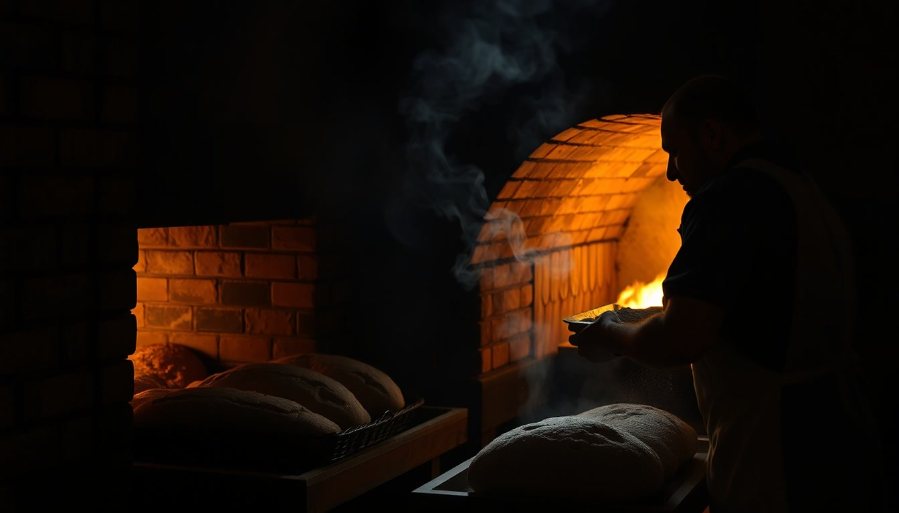
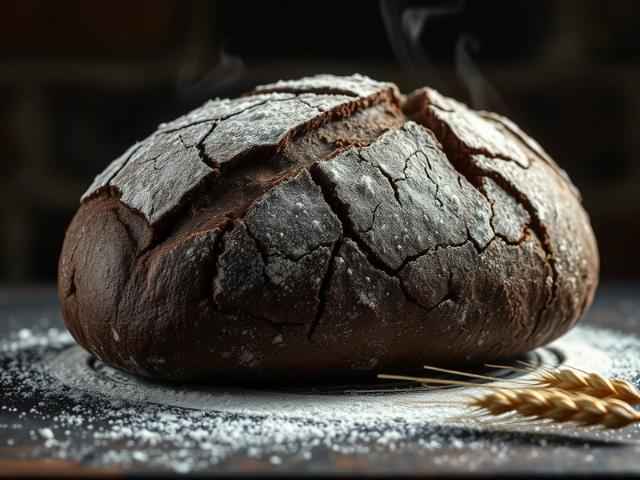
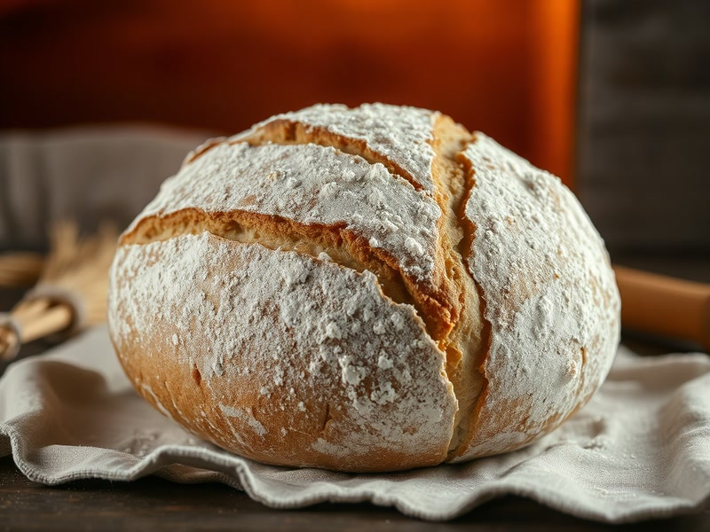
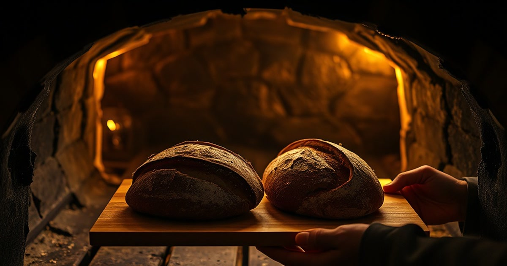

Cinematic wood-fired bakery imagery with a pre-dawn glow: smoky, ember-warm lighting in brand hues (burnt orange #c2410c and dark brown #78350f), wheat highlights #fef3c7, and near-black shadows #1c1917. Use a photographic style with subtle film grain, shallow depth of field, and crisp textures on cracked crust and flour dust. Mood is early-morning Leith craft—embers, soot-speckled brick, and gentle steam—while keeping backgrounds simple and low-detail so the bread remains the clear hero.
0.0105 Pollen in 10 calls
hero 1344×768 · PASS
index.html:11 · subject: Bakers loading loaves

Attempt 1 · black-forest-labs/flux.1-schnell · seed 1724965533 size 1344x768weight 66detail 29.31contrast 8.02palette 0.01distinct ok witness: {"text":false,"subject":true,"decoy":false}
promptBakers loading wood-fired sourdough loaves into a glowing brick oven, pre-dawn atmosphere with drifting steam and ember light. Composition: keep the entire left 45% as a calm, dark shadowy brick background (very low detail, near-black #1c1917) for a clean white text overlay contrast; place the action on the right. Close, documentary feel with warm rim light in #c2410c and deep browns #78350f; no text.
rye 800×600 · PASS
index.html:20 · subject: Dark rye sourdough loaf

Attempt 1 · black-forest-labs/flux.1-schnell · seed 704567820 size 800x600weight 131detail 59.91palette 0distinct ok witness: {"text":false,"decoy":false,"subject":true}
promptDark rye sourdough loaf with a deeply cracked crust, flour lightly dusted, steam faint in warm ember light. 4:3 framing: loaf centered, angled slightly to show crack lines and blistered surface. Background is a softly blurred dark wooden peel and soot-speckled brick, low detail, tinted with near-black #1c1917 and warm browns #78350f; subtle highlights in wheat #fef3c7. Photographic, shallow depth of field. No text or labels.
country 800×600 · PASS
index.html:21 · subject: Floured country boule

Attempt 1 · black-forest-labs/flux.1-schnell · seed 1905867023 size 800x600weight 124detail 60.93palette 0distinct ok witness: {"text":false,"decoy":false,"subject":true}
promptRound country sourdough boule dusted with flour, rustic scoring, airy rustic crumb hinted at a torn edge. Place the loaf in the middle with gentle diagonal lift for depth. Background: minimalist linen cloth and warm oven glow, blurred, using wheat #fef3c7 highlights and deep ember browns #78350f. Lighting is soft and directional, emphasizing texture and cracks; shallow DOF, subtle film grain. No words or branding.
buns 800×600 · PASS
index.html:22 · subject: Cardamom buns on tray
Attempt 1 · black-forest-labs/flux.1-schnell · seed 479852582 size 800x600weight 68detail 54.65palette 0distinct ok witness: {"text":false,"subject":true,"decoy":false}
promptCardamom buns, glossy and glazed with twisted spirals, arranged on a wooden tray near the edge of a wood-fired oven. 4:3 framing: buns slightly off-center for space, with steam and embers creating warm bokeh. Palette stays within #c2410c amber glow and #78350f browns, with creamy highlights #fef3c7 on the glaze. Background is dark and low-detail to keep buns clearly recognizable. Photoreal, shallow depth of field, no text.
og 1200×630 · PASS
index.html:3 · subject: Leith wood-fired sourdough scene

Attempt 1 · black-forest-labs/flux.1-schnell · seed 1084452142 size 1200x630weight 107detail 31.11palette 0distinct ok witness: {"text":false,"decoy":false,"subject":true}
promptCrumb & Ember style wood-fired sourdough in a Leith-inspired setting: an open oven mouth with glowing coals, two or three loaves on a wooden peel mid-transfer, and a baker’s hands in soot-lit warmth. Wide 1.9:1 composition: let the top sky/oven arch be darker and less detailed in near-black #1c1917; focus light on the loaves using ember orange #c2410c and crust browns #78350f, wheat highlights #fef3c7. Cinematic photo, subtle grain, no text.